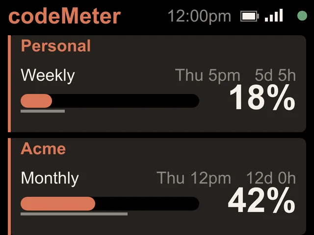

Personal + work
Your plan and your work plan.
A weekly personal plan and a monthly work plan run on different clocks. codeMeter shows both, each on its own clock.


Why it helps
Know which one has room.
Pro and Max reset weekly. Team and Enterprise reset monthly. With both on one screen you can see which account has room before you start the next task, without signing in and out.
On the screen
Two cards, two clocks.
| Card | Line | Shows |
|---|---|---|
| Personal (Pro or Max) | Weekly | Reset day and time, countdown, bar, percent used |
| Work (Team or Enterprise) | Monthly | Reset date, countdown, bar, percent used |
Set up
One token from each.
- 1Personal token
Sign in to your personal account and run
claude setup-token. - 2Work token
Sign in to your work account and run it again.
- 3Name them
Pick 2 Claude accounts, paste both, name them (up to 10 characters) and Save.
FAQ
Questions.
Can one account be personal and the other a work plan?
Yes. Each account shows the limits its own plan has, so a personal Max plan (weekly) and a work Team plan (monthly) sit side by side.
Can I name the accounts?
Yes, up to 10 characters each. Leave them blank and they read Claude 1 and Claude 2.
How do I rename them later?
Hold B about 7 seconds. The setup page opens again with your Wi-Fi and names kept. Change the names, paste both tokens and Save.
Does checking use up my Claude limit?
Each check is one tiny request on Anthropic's cheapest model, once a minute. It is a negligible slice of your allowance.